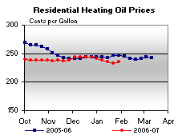
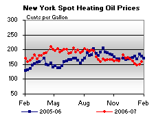

Released on January 31, 2007
(Next Release on February 7, 2007)
A Shift in Momentum
At some point during the Super Bowl this coming Sunday, it is likely that television analysts will talk about a shift in momentum from one team to the other. Whether it is the result of one key play or just a collection of several important plays, analysts will talk about how the shift in momentum might be just enough to push one team to victory. At the time, however, no one will be sure how long the momentum shift will last. A similar uncertainty currently exists in markets for oil and gasoline, the single most important petroleum product in the U.S. market. With the near-month crude oil futures price rising recently from a level close to $50 per barrel recently to nearly $57 per barrel yesterday, retail gasoline prices have seemingly bottomed, with the national average price on January 29 unchanged from its January 22 level. The end of the declining trend in gasoline prices over prior weeks is generating expectations among some analysts that momentum has shifted towards rising prices. But whether any such shift persists into the spring and beyond, or lasts only a few weeks, is still an open question.
There is reason to believe that once retail gasoline prices begin rising, an upward trend could last for many weeks. First, with a few weeks of possible cold winter weather remaining, temperatures, particularly those in the Northeast where much of the country’s heating oil is consumed, will be a critical factor affecting crude oil prices. If cold weather persists in the Northeast, then crude oil prices are not likely to diminish much, if at all, in February, and gasoline prices would likely continue rising over the next few weeks. However, by the time March arrives, if not sooner, gasoline will become the main focus of domestic markets, as demand begins to increase. Over the last three years (2004 through 2006), gasoline demand in March has averaged about 200,000 barrels per day higher than in February. At least partly due to this increase in demand, the U.S. average retail price for regular gasoline has averaged more than 13 cents per gallon higher in March than in February over the last three years.
But could a rise in gasoline prices over the next couple of weeks be temporary, with prices falling again relatively soon? With gasoline inventories rising sharply over the last five weeks thanks to strong import volumes and domestic production, there is certainly ample gasoline on hand. If crude oil prices were to fall back towards $50 per barrel, gasoline prices would likely flatten and eventually fall, especially if gasoline inventories remain above the average range for this time of year (see Figure 4 in the Weekly Petroleum Status Report ). While this scenario is possible, it seems less likely for several reasons. Saudi Arabia has already announced its plans to follow through on its commitment to cut production further beginning February 1, and some analysts are expecting other OPEC countries to cut further as well. Also, the average range for gasoline inventories is fairly narrow and they can fluctuate from one end of the range to the other in a matter of just a few weeks, as was seen recently, when they went from below the range to above the range in just five weeks. Indeed, on a days supply basis, gasoline inventories are roughly in the middle of their normal range, despite the sharp build in absolute levels. This reflects the recent strength in gasoline demand, and illustrates the fragility or susceptibility of the gasoline balance to momentum shifts.
Whether we look back in a few months and view this week’s crude and gasoline price data as a major turning point in prices remains to be seen. But, for the time being, even if prices should rise over an extended period, EIA does not expect to see the average U.S. retail gasoline price approach anything close to $3 per gallon, as it has in each of the last two years, unless there is a major disruption in infrastructure and/or crude oil supplies.
Residential Heating Oil Prices Increase
Residential heating oil prices rose for the first time in six weeks with the period ending January 29, 2007. The average residential heating oil price increased by 2.7 cents per gallon last week to reach 236.0 cents per gallon, a decrease of 10.1 cents from this time last year. Wholesale heating oil prices gained 9.6 cents to reach 166.8 cents per gallon, a decrease of 16.7 cents compared to the same period last year.
The average residential propane price increased by 0.2 cent, reaching 199.4 cents per gallon. This was a decrease of 0.9 cent compared to the 200.3 cents per gallon average for this same time last year. Wholesale propane prices increased by 4.7 cents per gallon, from 94.4 to 99.1 cents per gallon. This was a decrease of 1.8 cents from the January 30, 2006 price of 100.9 cents per gallon.
Retail Gasoline Prices Unchanged, Diesel Prices Decrease
Retail gasoline prices held steady for the week of January 29, 2007, remaining at 216.5 cents per gallon. Prices are 19.2 cents per gallon lower than at this time last year. East Coast prices fell 3.8 cents to 216.5 cents per gallon. The Midwest was the only region to report an increase, with prices rising 8.9 cents to 208.1 cents per gallon. Gulf Coast prices were down 3.7 cents to 201.7 cents per gallon, while Rocky Mountain prices fell 3.8 cents to 212.0 cents per gallon. Prices for the West Coast were down 4.8 cents to 246.1 cents per gallon, and are now only 0.5 cent per gallon higher than at this time last year.
Retail diesel fuel prices were lower again this week, decreasing 1.7 cents to 241.3 cents per gallon. Prices are 7.6 cents lower than at this time last year. All regions reported decreases. East Coast prices fell 1.5 cents to 240.6 cents per gallon. Midwest prices dropped 2.2 cents to 234.9 cents per gallon. The Gulf Coast saw a decrease of 1.4 cents to 234.7 cents per gallon, while Rocky Mountain prices fell 3.0 cents to 255.6 cents per gallon. Prices on the West Coast saw a decrease of 0.8 cent to 268.7 cents per gallon. Prices are still 4.7 cents per gallon higher than at this time last year.
Propane Stockdraw Matches January Average
Preliminary data show the propane stockdraw during January 2007 roughly matched the most recent 5-year average stockdaw of 10.3 million barrels. On a weekly basis, propane inventories fell by 2.1 million barrels last week and settled at an estimated 51.5 million barrels as of January 26, 2007, a level that remains above the average range for this time of year. Regional activity reported inventories up in the East Coast by 0.2 million barrels, while inventories in the Midwest and Gulf Coast regions continued lower with declines measuring 0.8 million barrels and 1.3 million barrels, respectively. The combined Rocky Mountain/West Coast region fell by 0.2 million barrels during this same time. Propylene non-fuel use inventories gained last week by 0.2 million barrels to account for a much larger 6.6-percent share of total propane/propylene inventories, compared with a 6.0-percent share from the prior week.
Text from the previous editions of “This Week In Petroleum” is now accessible through a link at the top right-hand corner of this page.
| Retail Prices (Cents Per Gallon) | |||||||
|  | |||||||
| Retail Data | Changes From | Retail Data | Changes From | ||||
| 01/29/07 | Week | Year | 01/29/07 | Week | Year | ||
| Gasoline | 216.5 | 0.0 | Heating Oil | 236.0 | |||
| Diesel Fuel | 241.3 | Propane | 199.4 | ||||
| Spot Prices (Cents Per Gallon) | |||||||||||||||||||||||||||||||||||||||
|  | |||||||||||||||||||||||||||||||||||||||
|
|||||||||||||||||||||||||||||||||||||||
| Stocks (Million Barrels) | |||||||
 |
|||||||
| Stocks Data | Changes From | Stocks Data | Changes From | ||||
| 01/26/07 | Week | Year | 01/26/07 | Week | Year | ||
| Crude Oil | 324.9 | Distillate | 140.0 | ||||
| Gasoline | 224.6 | Propane | 51.477 | ||||